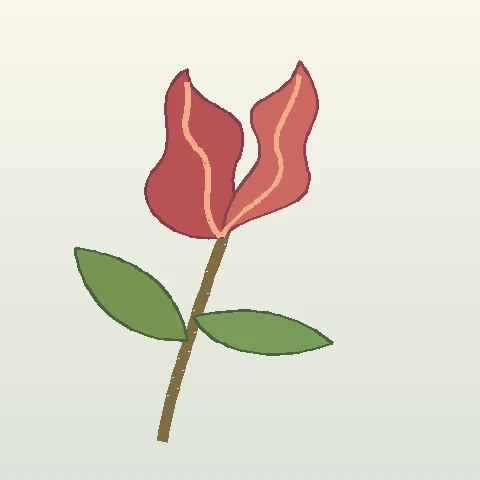

Leaf curl
Twisted, reddish young leaves
This is one possible explanation. Compare the signs below with those on your plant.

What to look for
Inspect several shoot tips. Distinguish normal red young foliage from thickened or puckered tissue.
Possible causes and next steps
Several disorders affect expanding leaves. Use host species, season and local weather to narrow the cause.